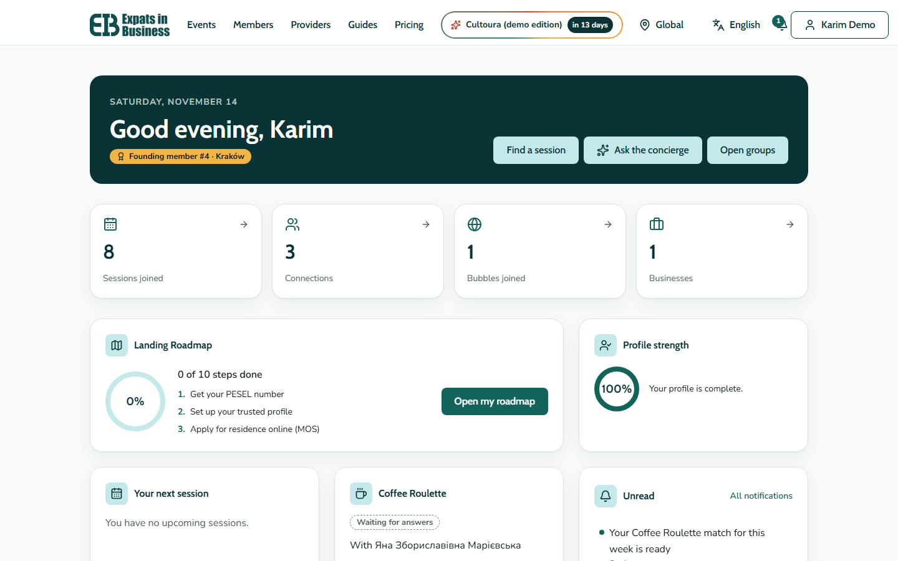
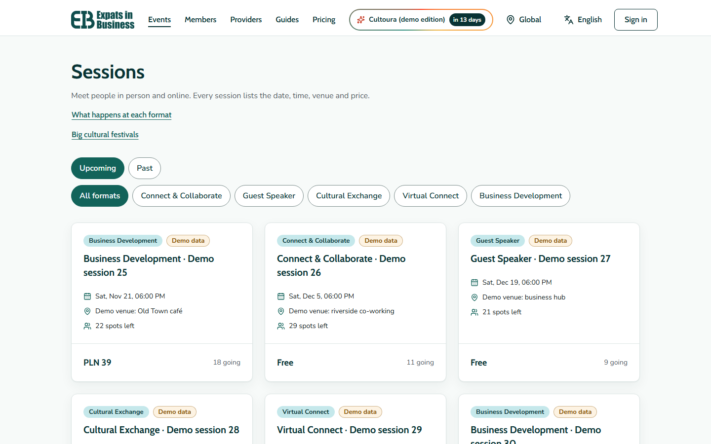
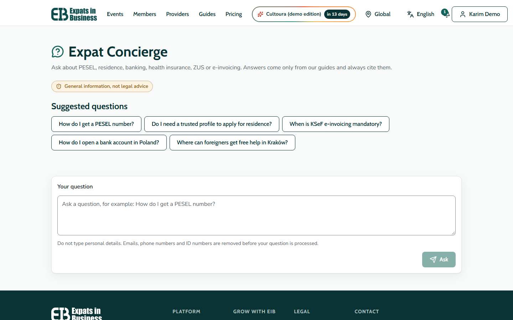
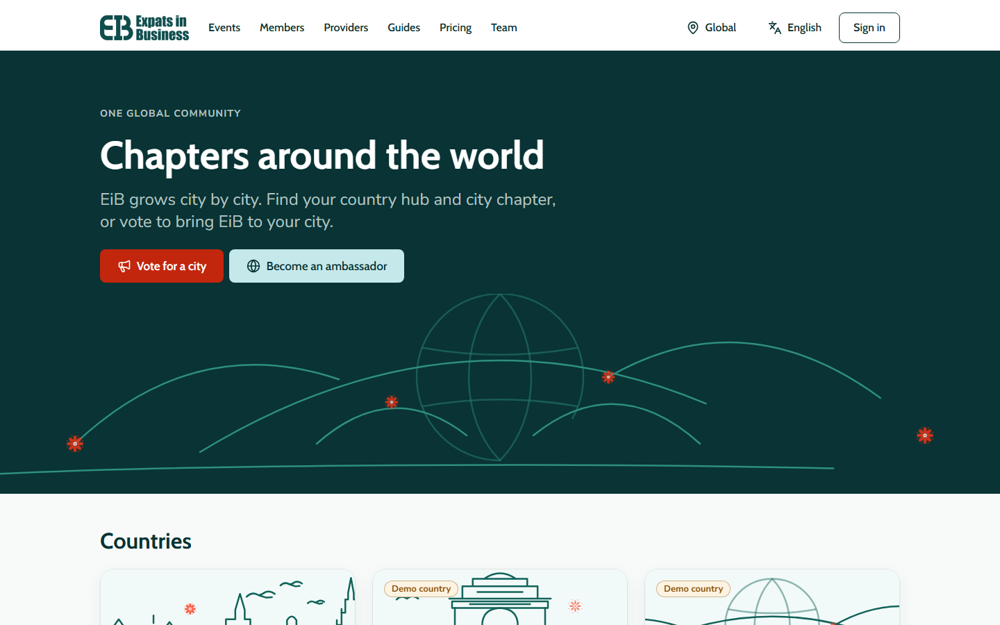
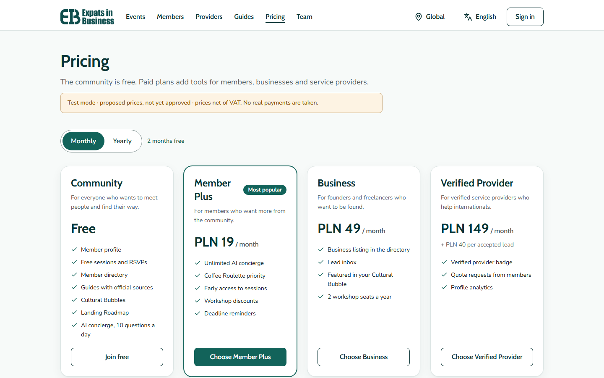
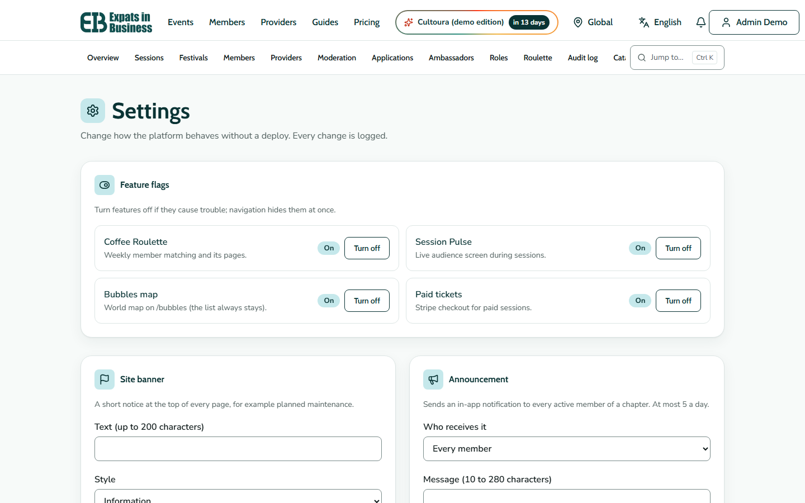

The EiB platform: what we built, how we tested it, and what happens next.
Requirements, features, admin tools, environments, test results, accessibility and security reports, open findings and the decisions that need EiB. Written to be read first, before opening the real product.
Prepared for Ziyan Sinnen and the Expats in Business team Edition {{date}} Release v1.0.0 (source on GitHub, private repository) Confidential. All rights reserved by Expats in Business.
Kraków · Warsaw · the world
Start here
Contents
Part A is for everyone. Parts B and C go deeper for reviewers and developers. Every number in this report comes from a test run or a file in docs/test-evidence/.
01Executive summary
02Decisions and actions for EiB
03How the project ran: timeline
04Requirements and traceability
05The 14 old-portal bugs
06Gaps and deviations from the brief
07Feature tour: members and events
08Feature tour: community and growth
09Admin features
10Architecture and technology
11Environments: what ran where
12Testing results
13Accessibility report
14Security report
15Performance report
16Findings register
17Go-live readiness and next steps
AAppendices: versions, evidence, glossary
Reading guide
Ziyan and the EiB team
Read 01, 02, 04 to 09 and 17. They say what exists, what is missing and what only EiB can decide.
Reviewers and auditors
Read 11 to 16. Each report states what was run, on which environment, what passed, what failed and what was not covered.
Developers
Read 10, 11 and the appendices, then the repository's README.md and docs/DEPLOY.md.
How honest this report is. It lists what did not work as well as what did: one defect found and fixed during testing, several items the original brief asked for that are not built, a web-scanner run that could not finish, and a continuous-integration pipeline that has never run. Nothing is rounded up. All people, companies, venues and prices in screenshots are labelled demo data.
Expats in Business · complete project report2
01 · Executive summary
Where the project stands
Expats in Business (EiB) is a free, community-run business network for internationals, founded in Kraków in 2024. The new platform replaces the old portal with one product organised into chapters (Global, Country, City) with Cultural Bubbles across them. Version 1.0.0 is built, tested and ready for a stakeholder demo and a first deployment.
{{pages}}pages in 3 languages
{{actions}}audited server actions
{{models}}data models
{{loc}}lines of TypeScript
The result in six lines
Area
Result
Scope
Built All 16 planned milestones, plus festivals, growth tools, RSVP, a Team page and a deployment kit. 5 brief items not built (section 6).
Functional tests
Pass {{unit}} unit tests; every browser spec passes in clean serial runs; link crawler 300 pages with no problems.
Accessibility
Strong {{sweep_checks}} axe checks across every route: 0 violations except one serious label issue on signed-in pages, now fixed in code. Lighthouse accessibility 100.
Security
No critical issue found 0 secrets in git history, 0 production dependency vulnerabilities, {{access_pass}} of {{access_total}} access-control probes pass. Web scanner did not finish; no penetration test yet.
Performance
Good 4 of 6 measured pages meet the 90 target on mobile (97 to 100); the Team and festival pages score 85 and 80 because of a slow first paint to fix.
Going live
Not deployed Free deployment kit is ready; it needs EiB's accounts and several business decisions (section 2).
The one real defect testing found
The "download my data" button (a GDPR right) failed for every member since an early milestone, because of a wrong database field name. Unit tests and type-checking missed it; the end-to-end sweep caught it. It is fixed and a regression test guards it.
Bottom line. The product is solid enough to show and to pilot. Before real members and real money, EiB must make the decisions in section 2 and a lawyer must review the legal texts and the licence.
Expats in Business · complete project report3
02 · Decisions and actions
What only EiB can decide or do
The software cannot make these calls. Each blocks something in the go-live path.
#
Decision or action
Why it matters
Owner
1
Approve or change every price (Member Plus, Business, Verified Provider, Corporate)
All prices in the product are labelled proposals. Nothing can be sold honestly until they are approved in Admin → Catalogs.
EiB
2
Legal entity that sells tickets and issues invoices; VAT set-up
Needed before Stripe live mode. Stripe is in test mode only today.
EiB, accountant
3
Refund and cancellation policy
The product deliberately says only "the team will contact you about your payment". No refund promise was invented.
EiB
4
Lawyer review of privacy policy, terms, cookie text and the proprietary licence
Legal pages are drafts marked "to be reviewed by a lawyer". Polish law applies to the privacy texts.
EiB, lawyer
5
Real content: the founder's message, team members, photos, partner logos (with written permission), real festival dates
The Team page and festival pages hold labelled placeholders. EiB enters the real content in the admin area; no developer is needed.
EiB
6
Sponsorship packages and stall fee policy
The sponsor report and stall applications work; their commercial terms are not defined.
EiB
7
Native review of Polish and Ukrainian texts
They are machine-translated. Only key coverage is tested, not quality.
EiB volunteers
8
The 5 items the brief asked for that are not built (section 6): About, Partners and Stories pages; cookie banner; admin form to launch a new chapter
Decide: build now, build after the pilot, or drop. The chapter form matters most if Warsaw must launch without a developer.
EiB and developers
9
Create the hosting accounts (Neon database, Brevo email, Render app) and a custom domain
The free deployment kit is ready (render.yaml, docs/DEPLOY.md) but needs accounts only EiB can open.
EiB
10
Share the code: keep the GitHub repository private; move it into an EiB organization and add Ziyan with the Read role
The licence forbids use outside EiB. An organization makes EiB the owner and allows read-only access.
EiB
Already done on the repository. It was public; it is now private. A scan of the full git history found no secrets (section 14).
Expats in Business · complete project report4
03 · How the project ran
Timeline: 16 milestones in about a week
Built milestone by milestone, one feature branch each, with small commits, tests and a progress-log entry per step. Dates are from docs/PROGRESS.md.
Date (2026)
Milestone
What it delivered
6 Nov
M1 Scaffolding
Next.js app, database, environment validation, setup script, first tests
All 70 models, demo seed (120 members, 30 providers, 24 past and 8 upcoming events), 8 official guides, homepage with line-drawn skyline
11 Nov
M6 to M8
Accounts, onboarding, profiles, settings; events, RSVP, waitlist, QR tickets, payments; check-in, Pulse, Who I met, event builder; plans and billing
12 Nov
M9 to M12
Directory, connections, verified providers; guides and AI concierge; Landing Roadmap; community, Bubbles map, Coffee Roulette, admin command centre, security hardening
13 Nov
M13 to M15 and growth
Festivals; applications board, catalogs, sponsor report; languages, SEO, quality pass; chapters, ambassadors, careers, volunteering; RSVP on every event
13 Nov
M16 and final polish
Audit of 79 actions, rate limits, code splits, caching fixes
14 Nov
Release candidate
Team page and admin editor; proprietary licence; deployment guide and Render blueprint; README; test report; v1.0.0 tag; repository made private; Team in the menu, footer split
16 to 17 Nov
Evidence pass
Full accessibility sweep of every route; secret and dependency scans; this report
How the work was controlled
Rules in the repository (CLAUDE.md): plan before coding, never invent company facts, every action validated and audited, nothing hard-coded to Kraków or PLN, no clickable element without an action.
Definition of done per milestone: acceptance criteria shown in the browser, npm run check green, new logic unit-tested, new pages with a browser test and an accessibility check, no dead links, 375 px and 1440 px layouts, reduced motion and keyboard checked, progress log updated.
Review: an independent reviewer pass after milestones; findings fixed (for example brand colours and contrast pairs in M2).
Expats in Business · complete project report5
04 · Requirements and traceability (1 of 3)
Requirements: accounts, chapters, events
Requirements from the original brief (sections 3A to 3L and 7), checked against code and tests. DonePartlyNot builtDiffers
Ref
Requirement (brief)
Status
Evidence
A1
Sign-in by email link (Mailpit locally), optional Google, password for demo users; sign-in to dashboard under 2 s
Done
Browser test "magic link signs in under 2 s"; Google only when keys are set (not tested live)
A2
Onboarding in 6 steps, saved per step
Done
Roadmap tests re-run onboarding; step saves are independent
A3
Public profile with per-field visibility; copy-profile-link
Tests: posting and reacting; members-only; moderation decision audited
H2
Bubbles SVG world map with member shading, hide under 5, keyboard list alternative
Done
Test: map with linked countries and list alternative; feature flag falls back to the list
H3
Coffee Roulette: weekly opt-in matching, no repeats within 8 weeks, trios for odd numbers
Done
Unit and browser tests
04 · Requirements and traceability (3 of 3)
Requirements: admin, public pages, trust, demo
Ref
Requirement (brief)
Status
Evidence
I1
Command centre: KPI cards, chapter health, tables with search and CSV export
Done
Test: 8 KPIs, charts, chapter health; members export
I2
Applications board (speaker, story, contributor) with applicant-visible status
Done
Tests: applies, moves to review, accepts
I3
Audit log viewer for every admin write
Done
Audit entries asserted in moderation tests
I4
Sponsor report by signed link, with numbers under 5 hidden
Done
Route /sponsor-report/[token] opens for visitors by token
Expats in Business · complete project report7
04 · Requirements and traceability (3 of 3, continued)
Requirements: public pages, trust, demo, quality
Ref
Requirement (brief)
Status
Evidence
J1
Homepage with hero, line-drawn skyline, stats, next events, how it works, partner placeholders
Done
Homepage tests; Lighthouse; placeholders labelled
J2
/about, /partners, /stories pages
Not built
No pages exist. The Team page and the festival pages cover part of the intent
J3
Legal pages as MDX drafts labelled for lawyer review; styled 404 and error pages
Done
Tests: no raw markdown (bug 8); styled 404
K1
Cookie banner with "Reject all" as prominent as "Accept all"
Not built
No banner. No analytics or third-party scripts exist; cookies are the sign-in session, language and chapter choice. See section 6
K2
Security headers with a nonce-based CSP
Differs
Headers present; the CSP is static and allows inline scripts (documented decision)
K3
Rate limits on sign-in, concierge, quotes, check-in
Done
Postgres-backed limits on sign-in, the concierge, billing, reviews, posts and other writes; sign-in limit proven (429 after a few wrong attempts in a burst)
K4
SEO: metadata, social images, sitemap with hreflang, robots, JSON-LD
Done
Tests for JSON-LD, social cards, sitemap and robots
K5
English, Polish, Ukrainian; guides with machine-translated summaries marked as such
Done
{{keys}} strings per language; key parity tested; quality of pl and uk not reviewed
L1
Deterministic demo seed with the stated counts and demo accounts; demo:reset under 30 s
Done
120 members, 30 providers, 8 Bubbles, 24 past and 8 upcoming events (brief said 6); reset takes about 3 s
S1
Environment validated with Zod; Stripe test keys only; signed webhooks; idempotency
Done
Unit tests for env rules; live keys rejected
S2
Uploads: re-encoded images with a size limit, stored outside the code
Done
Team photos: 2 MB limit (stricter than the brief's 5 MB), decoded and re-encoded to WebP, stored in the database
S3
GDPR: data export, deletion, opt-ins, aggregates under 5
Done
Export fixed and tested; deletion has a 30-day grace period
S4
Lighthouse mobile 90 or more in all four categories on key pages; WCAG 2.1 AA with zero serious axe violations
Mostly
Accessibility 100 and best practices 100 everywhere measured; performance below 90 on two pages; one serious axe finding, fixed (sections 13 and 15)
S5
Zero dead links and no-op buttons (crawler)
Done
300 pages crawled, 0 problems
S6
Works with the offline AI provider and no internet; fresh clone runs in under 10 minutes
Partly
Offline provider works; clone-to-running time was not measured
Beyond the brief (added during the project)
Festivals with a console, ticket tiers, volunteers, stalls, partners and sponsor reports; growth tools: chapters world view, ambassador programme, careers, volunteering; RSVP on every event.
Team page with an admin editor, photo upload and consent-based email; proprietary licence; deployment kit; QA scripts for access control, accessibility sweep and screenshots.
Expats in Business · complete project report8
05 · The old portal's bugs
14 known bugs of the old portal, made impossible
The brief listed 14 bugs in portal.expatsinbusiness.org that the new platform must not repeat. Each has a design rule and a test.
#
Old bug
How the new platform prevents it
Check
1
Dashboard stat links dead
Every stat card navigates to a real list with a designed empty state
Browser test
2
Facebook link on event page unstyled
One ExternalLink component for all outside links (new tab, safe rel)
Crawler
3
"Need Help" dead
Help centre with FAQ and a contact form that emails the team
Browser test
4
"Copy profile link" dead
Clipboard API with fallback and a confirmation toast
Browser test
5
"Add email" dead
Secondary email added, verified by a single-use link
Browser test with the mail inbox
6
Account "Save changes" does not persist
Saved by a server action, confirmed with a toast, survives reload
Browser test
7
Slow sign-in redirect
Email-link sign-in straight to the dashboard within a 2 s budget
Timed test
8
Privacy policy shows raw markdown
Legal pages rendered from MDX with shared prose components
Browser test
9
Session Types page empty
Event formats page filled from the catalog, editable in admin
Page exists; sweep
10
Article cards without images, dead links
Guides with sources and dates; every card links to a real guide
Crawler
11
"Home" twice in the footer
One navigation config; a unit test rejects duplicate links
Unit test
12
Event cards misaligned
Equal-height card layout
Visual review
13
Profile stat icons dead
Stat cards link to filtered lists
Browser test
14
Public profile not visible
Public profile page with per-field visibility
Browser test
The general rule behind all of them: every clickable element works or is not drawn as clickable. The link crawler follows 300 pages in 3 languages on every release check and fails on any dead link or duplicate menu entry.
Expats in Business · complete project report9
06 · Gaps and deviations
What the brief asked for that is not as specified
These were found by comparing the brief with the code in this review. None breaks the product; each needs a decision (section 2, item 8).
Item
Status
What exists, and the impact
Proposed handling
Chapter-in-a-box admin form (launch a city in under 60 s)
Not built
New chapters must be added through the seed or the database. The brief called it a "never cut" item. Members can already vote for cities and see launching chapters, but an admin cannot create one in the UI.
Build before Warsaw launches, if Warsaw must go live without a developer
/about, /partners, /stories pages
Not built
The homepage has partner placeholders; the Team page and festival pages tell part of the story. There is no About page and no podcast page.
Build after real content (history, partner permissions, episodes) exists
Cookie banner
Not built
The site sets no analytics or advertising cookies and loads no third-party scripts, so no consent is needed today. The banner becomes necessary the moment analytics is added.
Build together with analytics, if ever
Data retention jobs (concierge logs 90 days, audit log 1 year)
Not built
Nothing deletes old logs automatically. Logs hold no personal data by design, but the stated retention period is not enforced.
Add a scheduled purge job before launch
Nonce-based CSP
Differs
A static CSP is used because per-request nonces would make every page dynamic and defeat caching. Inline scripts are allowed; protection relies on output encoding, which probes confirmed.
Revisit when nonce support for streamed pages matures
Route names
Differs
/chapters/[slug] instead of /c/[chapter]; check-in and Pulse under /admin/events/[id]/; sponsor report at /sponsor-report/[token]. Cosmetic.
None
Demo seed counts
Differs
8 upcoming events instead of 6; 190 chapter votes in the current database instead of 140 (test runs add votes).
None
Continuous integration
Never ran
A GitHub Actions workflow and a Bitbucket pipeline are defined. GitHub shows 0 recorded runs, so automatic checks on each change have not happened. All checks ran locally instead.
Check Settings → Actions; make one pipeline the standard
Verified placeholders (by design, never presented as fact)
Prices and plans, sponsors and partner logos, festival dates, the refund policy, ambassador benefits and testimonials are labelled placeholders ("proposal", "Demo profile", "permission pending"). Only the facts in docs/FACTS.md appear as company facts, each with a source.
Expats in Business · complete project report10
07 · Feature tour
Members and events

Member dashboard: every card is a link.

Events with filters by time and format.
For members
Join and settle in: email-link sign-in, six-step onboarding, a profile with per-field visibility, a personal 30/60/90-day roadmap with reminders and calendar export.
Meet people: member directory, double opt-in connections, groups, Bubbles, a weekly Coffee Roulette match, "Who I met" after a session.
Come to sessions: RSVP in one click, waitlist with automatic promotion, QR ticket, calendar file; paid sessions through Stripe Checkout in test mode (card, BLIK, Przelewy24).
Get answers: guides with official sources and dates; a concierge that answers only from them and hands over to a human when it cannot.
Stay in control: data download, deletion with a 30-day grace period, visibility settings.
For chapter leads
Publish a session in under two minutes with the event builder.
Door check-in by phone camera or manual search; each ticket works once.
Bubbles world map with a list alternative.Verified provider directory.

Expat Concierge: cited answers only.
Community and directories
Bubbles: groups by country of origin on an SVG world map (no tile service, no tracking), shaded by member count, with numbers under 5 hidden.
Groups and moderation: posts, questions, announcements, reactions, reports and a moderation queue; every decision is audited.
Providers: categories, verification badge only after an admin ticks every criterion, quote requests, a provider inbox, aggregated analytics, reviews only from people who really asked for a quote.
Businesses: member listings and a lead inbox.
Growth tools
Chapters: world view, city votes, country and city pages.
Ambassadors: three tiers (global, country, city); apply, review, public listing.
Careers and volunteering: open roles, applications and withdrawals.
Membership: plans, subscriptions and a corporate enquiry form, with all prices labelled as proposals.
Languages and search: English, Polish, Ukrainian; hreflang, structured data, social cards.

Chapters: live, launching and requested cities.

Pricing: placeholders labelled as proposals.
Expats in Business · complete project report12
09 · Admin features
The admin centre
Admins see everything; chapter leads see only their own chapter. Every admin action is validated, rate-limited and audited. Ctrl K opens a command palette.
Command centre: 8 KPIs, sign-up and check-in charts, chapter health (demo data).
Section
What an admin can do
Who
Overview
KPIs (members, new, sessions, check-ins, open reports, pending verifications, concierge use, suspended accounts), charts, chapter health
Admin, lead
Sessions
Event builder, edit and publish, door check-in, live Pulse, attendee export
Each person: name, designation, group (founders, leads, team, volunteers), bio, time with EiB, LinkedIn, email, photo and its description, order, visibility.
Photos are checked, re-encoded as small images and stripped of location data; a 2 MB limit applies.
An email is shown only with the person's consent, and only when a visitor presses "Show email address" (it is not in the page source).
Settings and members
Feature flags switch features on or off without a deploy (the Bubbles map, Coffee Roulette, Pulse, paid tickets).
Site banner for announcements.
Members table with search, filters and CSV export; admins only.
Admin-only pages are protected on the server: members get a styled 403 page and no data in the response (section 14).

Settings: flags and banner.Members: search, filters, export.
Expats in Business · complete project report14
10 · Architecture and technology
How it is built
Browser · server-rendered pages with small interactive islands (forms, map, QR scanner)
Next.js 16 (App Router, Server Components, Cache Components) · pages, streaming, tagged caching, language routing, security headers
Outside services SMTP email, Stripe (test), optional AI provider
Technology
Layer
Choice (installed version)
Framework
Next.js 16.4.6, React 19.3, TypeScript 6.0 in strict mode
UI
Tailwind CSS 4.3, shadcn/ui, Motion, lucide icons; Cabin and Nunito Sans fonts
Data
PostgreSQL 17.11 with pgvector 0.8.7 and pg_trgm, Prisma ORM 7.10
Auth, validation
Better Auth 1.7, Zod 4.6, React Hook Form
AI
Vercel AI SDK behind one provider file (Groq, Gemini, OpenRouter, Anthropic or an offline demo provider); local embeddings (all-MiniLM-L6-v2, 384 dimensions)
Payments, email
Stripe 23 in test mode; nodemailer over SMTP (Mailpit locally)
Server Components by default · data access only in server code · money as integer minor units · times stored in UTC and shown in the chapter's time zone · nothing hard-codes a city, currency or language · every string through the translation files · files under 250 lines · no colour literals in components (a test scans) · secrets never committed and validated at start-up.
Expats in Business · complete project report15
11 · Environments
Where things ran
There is one developer laptop and no shared test or production server yet. These are the environments that existed, what each was used for, and what was not done in each.
ID
Environment
Setup
Used for
E1
Developer laptop, development mode
Windows 11 Home (build 26300), Node 24.14, npm 11.9; next dev on port 3000; about 1.7 GB of free memory at the time of testing
Building all 16 milestones. Known issue: the dev server uses about 1.7 GB, orphaned servers survive restarts, and two runs ended with low-memory kills and a corrupted .next folder.
E2
Local production build
next build then next start on ports 3000, 3100, 3200 and 3300 (several servers over time); demo data; AI provider "demo"; Stripe keys empty
Browser tests, link crawler, Lighthouse, accessibility sweep, screenshots, security probes. This is the closest thing to production that was tested.
E3
Docker services
Docker 29.9: PostgreSQL 17.11 + pgvector 0.8.7 + pg_trgm 1.6 on host port 5433; Mailpit on 1025 and 8025
The database for every run above; Mailpit caught sign-in and verification emails.
Never ran. GitHub reports zero runs; the Bitbucket pipeline is not connected. All checks were run locally.
E6
Staging
None
Not created.
E7
Production
None. Planned: Render (app), Neon (database), Brevo (email); kit in render.yaml and docs/DEPLOY.md
Not deployed. Nothing about live performance, email delivery or real payments is tested.
Why this matters. Everything reported here was measured on one slow, memory-limited laptop against demo data. Timing numbers (especially performance and the parallel test runs) will differ on real hosting, and email, payments and the AI provider have not been exercised against real services.
Source control
GitHub repository (private) agastyasharma20/expats-in-business; branch main; release v1.0.0 with this guide attached. The brief named Bitbucket as the main remote; the project moved to GitHub early on (decision logged), and Bitbucket remains an optional mirror.
Expats in Business · complete project report16
11 · Environments
What was done in which environment
Activity
E1 dev
E2 local prod
E3 Docker
E5 CI
E7 live
Notes
Feature development
●
●
Milestones M1 to M16
Lint, type-check, unit tests
●
○
○ = defined, never ran. {{unit}} unit tests
Production build
●
●
○
Needs the database at build time
Browser tests (Playwright)
●
●
○
Desktop 1440 px and phone 375 px
Link crawler
●
●
300 pages
Accessibility sweep (axe)
●
●
{{sweep_checks}} checks
Lighthouse
●
●
Simulated slow mobile
Access-control and security probes
●
●
{{access_total}} checks
Secret scan (git history)
●
Gitleaks in Docker, 90 commits
Dependency scan
●
npm audit; Trivy on the lockfile
Web vulnerability scan (ZAP)
○
Stopped by low memory; to rerun
Real email, payments, AI provider
○
Not exercised (Mailpit and simulated Stripe only)
Load and stress testing
Not done
● done · ○ planned or attempted, not completed
What happened during testing, in order
First full browser run (parallel, two workers, E2): 168 runs passed, 3 failed, 2 flaky. The failures were timeouts on the loaded laptop; one was a reservation that did not finish in 30 s (finding F2).
Reruns one at a time on a clean database: every spec file passed (99 of 99 runnable desktop tests in 17 of 18 files; the 18th, the link-crawl spec, passed in the first run).
Stale state from interrupted runs caused extra failures (a feature flag left off, a leftover ticket). This is test hygiene, not an app fault; the reset steps are documented.
Accessibility sweep and security scans on 16 to 17 Nov. The ZAP image download and scan were stopped by the system under memory pressure.
Expats in Business · complete project report17
12 · Testing results
Testing: what ran and what passed
{{unit}}unit tests, all passing ({{unit_files}} files)
{{e2e_per_project}}browser tests in {{e2e_files}} files, run at 2 widths
{{crawl_pages}}pages crawled, 0 problems
{{access_pass}}/{{access_total}}access and security probes
Layer
What it checks
Result
Static checks
ESLint, strict TypeScript, Prettier; scans that forbid colour literals and the bare cn package
Pass
Unit tests
Permissions, capacity and waitlist, money and time zones, environment rules, language parity, contrast pairs, team schemas, concierge answer gate, account-menu accessible name
{{unit}} pass
Browser tests
Real flows with seeded personas: sign-in, RSVP and QR ticket, waitlist, check-in, Pulse, festivals, community, moderation, admin, team editor, pricing, languages, concierge, privacy export
All pass serially
Link crawler
Follows every menu and footer link in 3 languages; fails on dead links, duplicates, unsafe outside links
300 pages, 0 problems
Production build
77 pages and 14 API routes compile and prerender
Pass
Browser test runs in detail
Run
Setup
Outcome
A: full suite
Desktop and phone, 2 parallel workers, 1 retry, 12.7 min
168 passed · 3 failed · 2 flaky · 78 skipped by design · 17 not run (they follow a failed test)
B: stateful files
Serial, clean data: auth, events, check-in, community
31 of 31 passed
C: all other files
Serial, clean data, desktop
68 passed, 0 failed, 6 phone-only checks skipped (they run in the phone project)
What the failures in run A were
Sign-in under 2 s measured 4.2 s on the loaded laptop (passes at 2.9 s when run alone).
A group post, a door check-in and a festival-builder step timed out in parallel; each passed alone.
Reserve a free place stayed on "One moment…" for 30 s in one run. It passed alone (4.9 s). The server log shows a database warning about overlapping queries in one transaction; a link is plausible but unproven (finding F2).
Expats in Business · complete project report18
12 · Testing results
Which feature is covered by which tests
Feature
Tests
What is checked
Sign-in and account
8
Redirect when signed out; email-link sign-in; stat cards navigate; edits persist; second email verified through the mail inbox; hidden profile fields stay hidden; styled 403; help form
Events and tickets
7
List filters; event facts and calendar file; reserve, QR ticket and cancel; RSVP and un-RSVP; simulated paid ticket; unsigned webhook refused
Builder, door, Pulse
5
Publish in under 2 minutes; waitlist promotion; single-use check-in and member refusal; live Pulse; Who I met
Festivals
5
Builder; tampered party size refused; family ticket, volunteering, stall; console access control; stall acceptance and sales
Filters in the URL; limited visitor fields; review eligibility; verification rules; connection opt-in; provider inbox
Guides and concierge
5
Cited answer opens the official source; off-topic hand-off; prompt-injection attempt refused; guide disclaimers; Polish summary labelled
Roadmap, pricing, growth
15
Plan by situation; progress persists; plans from the database; subscribe and cancel; corporate enquiry; ambassadors; careers; spotlight
Admin tools, team
8
Applications board; catalogs; team editor with photo upload, email on demand, hide and delete; non-image refused
Privacy export
2
Visitors refused; a member gets her own data and nobody else's
Home, SEO, quality
25
Sections render without console errors; placeholders labelled; no serious axe violations; no sideways scroll; structured data; robots and sitemap; reduced motion; keyboard skip link; styled 404; styleguide
Reading this table. Counts are test definitions per file; tests that loop over routes or languages expand to {{e2e_per_project}} runs per width. A test confirms a flow works in a real browser against demo data. It does not prove the absence of other problems. The sections that follow add independent checks of accessibility and security.
Expats in Business · complete project report19
13 · Accessibility report
Accessibility: results of the full route audit
Standard: WCAG 2.1 levels A and AA, the target in the brief. Tool: axe-core 4.14 driving Chromium. Every route was loaded as the right user (visitor, member, provider or admin) at 1440 px and at 375 px, and public pages also in Polish and Ukrainian. Run on 16 Nov 2026 against a local production build (environment E2).
A11Y-1 · Serious · WCAG 2.5.3 "Label in Name" (level A) · fixed in code
Where: the account button in the header on every signed-in page, at desktop width where the name is visible ({{sweep_with_finding}} of the checks, always the same single element; at 375 px the name is hidden, so there is no mismatch). What: the button showed the member's name but its accessible name was only "Account menu", so people using speech control ("click Karim") or screen readers heard something different from what is on screen. Fix: the accessible name is now "Karim Demo, Account menu" (visible name first). A unit test asserts that the accessible name contains the visible text. Status: fixed in the source and covered by a unit test; the browser re-check on a rebuilt app is pending (it could not be run on the memory-limited laptop). Rerun with QA_PERSONAS=karim,admin,provider node scripts/qa-sweep.mjs.
Other measured results from the same audit
All {{sweep_checks}} pages loaded with HTTP 200. Across them: {{sweep_console_errors}} console errors, {{sweep_failed_requests}} failed requests, {{sweep_overflow}} pages that scroll sideways, {{sweep_h1_not_one}} pages without exactly one main heading and {{sweep_empty}} nearly empty pages.
Expats in Business · complete project report20
13 · Accessibility report
Accessibility: other evidence, and its limits
Lighthouse accessibility score
100 on all six pages measured (events, guides, Polish home, pricing, team, festival), mobile profile.
Built-in design rules
Every text and background colour pair is listed in a contrast table and a unit test enforces 4.5:1 for text and 3:1 for borders and focus.
Semantic HTML, labelled form fields, visible focus rings, 44 px touch targets, no meaning by colour alone (results use icons and words).
The Bubbles map always has a keyboard-friendly list alternative.
Images have text alternatives; the team editor has a field for each photo's description.
Behaviour checks in the browser tests
Keyboard: the skip link moves focus to the main content with a visible ring.
Reduced motion: entrance animations finish instantly (measured: animation duration 0.01 ms when the setting is on).
Phone layout: six key pages in three languages do not scroll sideways at 375 px.
What this report does not cover
Manual testing with a screen reader (NVDA, VoiceOver, TalkBack) and with speech control was not done. Automated tools catch only part of the real problems; a manual pass on the main journeys (sign-in, reserve a place, concierge) is recommended before launch.
Full keyboard walkthrough of every page was not done; only the skip link and menus were exercised in tests.
Zoom and text-size behaviour (200%, 400%) and high-contrast mode were not tested.
Other browsers and real phones. Chromium only.
Content quality: plain-language review and Polish and Ukrainian text have not been reviewed by native speakers.
Verdict
The platform meets its accessibility target for what automated tools can measure: no violations of WCAG 2.1 A or AA rules on any audited page, apart from one issue that is fixed in code. A manual assistive-technology review is the recommended next step, and no accessibility conformance claim should be published until it is done.
Expats in Business · complete project report21
14 · Security report
Security: scans and what they found
Scans ran on 16 to 17 Nov 2026 on the developer laptop (environments E2 to E4). The platform handles personal data, so the aim was to find leaks, vulnerable components and access-control gaps. No critical or high issue was found. The scope limits are stated in each row.
Check
Tool
Scope and result
Outcome
Secrets in git history
Gitleaks (Docker)
The whole history, every branch: 90 commits with changes plus 11 merge commits (no changes of their own), about 3.6 MB scanned: 0 leaks. A manual search for key formats found only a fake test value (sk_live_123) that proves live keys are rejected.
Clean
Vulnerable dependencies
npm audit; Trivy (Docker)
Production dependencies: 0 vulnerabilities (npm audit and Trivy agree). All dependencies including build tools: 12 advisories (10 moderate, 2 low) in development-only tooling (the component CLI and the lint toolchain); none ship to users.
Clean for production
Configuration files
Trivy
Trivy recognised no misconfiguration targets in the compose, pipeline and blueprint files, so this check has little coverage.
Limited
Web vulnerability scan
OWASP ZAP baseline
Did not complete. The image download and scan were stopped by the system under low memory. No ZAP result exists.
Not done
Access control
Custom script, 39 checks
Visitor, member and admin against protected pages and APIs: 39 of 39 pass (next page).
Pass
Input and output handling
Manual probes
Script and attribute break-out payloads in search parameters were not echoed unescaped; path traversal and oversized ids on the photo route returned 404; uploads of non-images are rejected.
Pass
Static analysis
ESLint, strict TypeScript
Zero errors. No dedicated security static-analysis tool (for example Semgrep or CodeQL) was run.
Partly
Code review of writes
Scripted audit of all 79 server actions (earlier, 13 Nov)
Every action authenticates and scopes its write to the owner or a permitted role. Gaps found then (missing rate limits, loose ids) were fixed.
Done
Penetration test
None
No independent human penetration test has been done.
Not done
Recommended before real members and real money: rerun the ZAP baseline on a machine with more memory (and a full active scan against a staging copy), run a code scanner such as CodeQL or Semgrep, and commission an independent penetration test.
Expats in Business · complete project report22
14 · Security report
Security: access control, headers and abuse limits
Access-control matrix: 39 of 39 checks pass
Who
Tried
Result
Visitor (signed out)
9 member, admin and provider pages
Sees a sign-in prompt; no personal or admin data in the response
Member
9 admin and provider pages
Sees the styled 403 page; no admin data in the response; own pages work
Admin
5 admin pages
All open
Visitor and member
Admin export, attendee export, roadmap calendar, account export
401 or 403; a member can export only her own data
Anyone
Team email route, photo route, unsigned Stripe webhook
Email route is POST-only and 404 for unknown ids; photo route 404; webhook not accepted
Attacker-style
Foreign Origin on sign-in; repeated wrong passwords
Foreign origin rejected (403); rate limit blocks from the third or fourth wrong attempt (429)
Denied pages are streamed, so the HTTP status is 200 while the person sees the sign-in or 403 view (finding F4); the check asserts that no seeded personal data is in the response.
Security headers on every page
Content-Security-Policy (default-src self; no framing; limited form targets)
Cross-Origin-Opener-Policy and Cross-Origin-Resource-Policy same-origin
HSTS on HTTPS (not testable locally); robots.txt keeps private areas out of search
Abuse protection
Per-account limits (burst window plus daily cap) on posts, reactions, reports, applications, reviews, billing, admin and account writes
Sign-in and the concierge are limited per address
Limits live in the database, so they hold across servers and restarts
Stripe webhooks signature-verified; client amounts never trusted
Uploads decoded and re-encoded (location data removed), size and type limited
Privacy by design
No personal data is ever sent to an AI model: prompts hold only the question and retrieved guide text, and obvious emails, phone numbers and ID numbers are stripped first.
Profile fields are opt-in per field; connection details appear only after acceptance; team emails only with consent and on request.
Reports and analytics hide any group under five people; admin audit entries carry no personal data.
Expats in Business · complete project report23
14 · Security report
Security risk register
ID
Risk
Level
Status and recommendation
R1
The Content Security Policy allows inline scripts, so it would not stop an injected script if output encoding failed
Medium
Accepted and documented. Output encoding confirmed by probes. Revisit nonces when streamed pages support them.
R2
No independent penetration test and no completed web scan
Medium
Open. Rerun ZAP; commission a penetration test before real members or payments.
R3
Stated log retention (concierge 90 days, audit 1 year) is not enforced by a purge job
Low to medium
Open. Logs hold no personal data by design; add a scheduled purge.
R4
Rate limiting depends on a correct proxy setting; behind a proxy with the setting at 0, all visitors look like one address
Medium if misconfigured
Documented in the deploy guide: set TRUSTED_PROXY_HOPS=1 on Render and test after launch.
R5
Real Stripe payments never tested; live keys are rejected by design
Medium at launch
Open. A payments review is needed before live mode (entity, VAT, refund policy).
R6
12 advisories in development-only tools
Low
No runtime exposure. Update the tools when fixes ship.
R7
Denied pages return HTTP 200 (no data exposed)
Low
Accepted for V1. Search engines are told to skip those areas.
R8
Secrets handled by people (hosting dashboards, email keys)
Process
Keep secrets only in Render, Neon, Brevo and GitHub secrets; rotate if shown to others; never in the repository (scan clean today).
R9
Team photos stored in the database count against the free database size
Low
2 MB upload limit and re-encoding to small images keep this small; monitor storage.
R10
Legal texts and the licence are drafts
Business
Open. Lawyer review (section 2).
Overall security position. The design is defensive (server-side permission checks, validated input, rate limits, privacy by default) and the scans that completed found nothing critical. The remaining work is independent verification (web scan, code scanner, penetration test) and the operating process around secrets and the live environment.
Expats in Business · complete project report24
15 · Performance report
Performance: Lighthouse results
Lighthouse 13, mobile profile with simulated slow connection and a slowed processor, production build, local server (environment E2). Targets in the brief: 90 or more in every category, LCP under 2.5 s, CLS under 0.1.
{{lighthouse_table}}
{{lighthouse_note}}
Reading the results
Accessibility and best practices are 100 on every page measured. Four pages meet the performance target; /pricing is 97.
Two pages are slower (the Team page and the festival page): the first big element appears after about 4.2 s and 4.6 s in the simulated slow-mobile test, even though the server answers in under 10 ms. It is a rendering-timing issue on pages that stream parts of their content. Finding F3; to retest on the live host.
The home page could not be measured in this run because of a Lighthouse tracing error; the milestone-5 measurement was 99, 100, 100, 100.
On a loaded laptop earlier the same pages scored 68 to 72, which shows how sensitive the number is to the machine; real hosting will need a fresh measurement.
Why the platform is fast where it is fast
Server Components and streaming; tagged caches refreshed by the exact action that changes the data.
CSS keyframes for entrance animation, so JavaScript stays small; maps are SVG; fonts self-hosted; no trackers.
Team photos are resized to 640 px WebP and cached for a year under a versioned address.
Expats in Business · complete project report25
16 · Findings register
Every finding, in one table
Severity: High = wrong or unsafe for real users · Medium = likely to hurt in production · Low = polish · Info = noted. Details and evidence are in docs/TEST_REPORT.md.
ID
Severity
Status
Finding
F1
High
Fixed
The personal-data export returned an error for every member (wrong database field name). Fixed; browser regression tests added.
F2
Medium
Open
Reserving a place sometimes did not finish within 30 s under parallel load; not reproducible one at a time. Suspected link to overlapping queries in one transaction. To investigate with a concurrency test.
F3
Low-Med
Open
Slow first paint on the Team page (4.2 s) and the festival page (4.6 s) in simulated slow mobile.
F4
Low
By design
Denied pages return HTTP 200 with a sign-in or 403 view; no data exposed.
F5
Low
Open
The admin tab bar is clipped on the right by the search box ("Catalogs", "Team", "Settings", "System" scroll under it).
F6
Info
Noted
CSP allows inline scripts (nonce CSP not possible with streaming and caching).
F7
Info
Noted
The public address is baked into canonical links at build time; changing it needs a redeploy (in the deploy guide).
F8
Info
Noted
The payment webhook answers 503 when Stripe is not configured (400 when configured and unsigned).
F9
Info
Noted
Server log warning about many close listeners on streaming responses; check the Pulse stream cleanup.
A11Y-1
Serious (a11y)
Fixed in code
Account button name did not contain its visible text (WCAG 2.5.3). Unit test added; browser re-check pending a rebuild.
F11
Medium
Open
Continuous integration has never run (GitHub: 0 runs). Automatic checks on each change are not in place.
F12
Low-Med
Open
No purge job for the stated log retention (concierge 90 days, audit 1 year).
F13
Decision
Open
Brief items not built: chapter-launch admin form, About, Partners and Stories pages, cookie banner.
F14
Medium
Open
The web vulnerability scan (ZAP) did not complete; no penetration test.
F15
Low
Noted
12 advisories in development-only tools (10 moderate, 2 low); none in production dependencies.
F16
Info
Noted
Parallel browser runs on the laptop produce timeouts that do not occur serially; stale data from interrupted runs causes extra failures (reset steps documented).
Expats in Business · complete project report26
17 · Go-live readiness
What is ready, and what happens next
Ready now
Product complete for V1
Tests, accessibility audit, secret and dependency scans done
Real founder message, team, photos, partner permissions
Lawyer review of legal texts and licence
Decisions on the 5 unbuilt items
Needs the developers
Rerun the web scan; add a code scanner
Fix F2, F3, F5; verify A11Y-1 in a browser
Make CI run; add the log purge job
Manual accessibility review
Load test the reservation flow
Suggested path
Step
What
Who
1 · This week
Review this report; answer the decisions in section 2; create the Neon, Brevo and Render accounts; move the repository into an EiB organization and add Ziyan (Read)
EiB
2 · Deploy
Follow docs/DEPLOY.md: database set-up, email, Render blueprint, first admin, scheduled jobs; check /api/health, sign-in email and the checklist
EiB and developers
3 · Fill
Enter the real Team page, festival details and content in the admin area; keep demo mode off
EiB
4 · Verify live
Lighthouse on the live address; rerun the access probes and accessibility sweep against it; test real email delivery; fix F2, F3, F5
Developers
5 · Secure
ZAP baseline and active scan on a staging copy; code scanner; penetration test; manual screen-reader review
Developers, external tester
6 · Pilot
Invite a small group in Kraków; real prices and legal texts only after approval; watch the audit log and support inbox
EiB
Recommendation. Show the product to Ziyan and key partners now. Deploy to the free tier as a private pilot in parallel. Hold real payments and a public launch until steps 4 and 5 and the legal decisions are complete.
Expats in Business · complete project report27
Appendix A · Versions and environment
Exactly what was used
Platform and tools
Operating system
Windows 11 Home, build 26300
Node.js / npm
24.14.0 / 11.9.0
Docker
29.9.2
PostgreSQL
17.11 (pgvector 0.8.7, pg_trgm 1.6)
Browser for tests
Chromium via Playwright 1.65
Hardware
Lenovo laptop; about 1.7 GB free memory in testing
Application
Next.js / React
16.4.6 / 19.3.1
TypeScript
6.0.3
Prisma
7.10.1
Better Auth
1.7.19
Tailwind CSS
4.3.5
Vitest / Playwright
5.1.0 / 1.65.0
axe-core (Playwright) / Lighthouse
4.14.0 / 13.6.0
Stripe SDK / Zod / sharp
23.1.0 / 4.6.7 / 0.35.5
Project size
Pages / API routes
{{pages}} / {{api_routes}}
Server actions
{{actions}}
Data models / migrations
{{models}} / {{migrations}}
Translated strings per language
{{keys}}
Lines of TypeScript
{{loc}}
Official guides
8 (29 searchable passages)
Demo data
120 members, 30 providers, 8 Bubbles, 24 past and 8 upcoming events, all fictional and flagged
Scripts that produced the evidence
npm run check lint, type-check, unit tests · npm run e2e browser tests · npm run crawl link crawler · npm run lighthouse performance
scripts/build-pdf.mjs builds this report from docs/pdf/ and docs/test-evidence/
Expats in Business · complete project report28
Appendix B · Evidence and how to reproduce
Where the proof is
File
Contents
docs/TEST_REPORT.md
Detailed test report with commands to reproduce
docs/test-evidence/qa-sweep.json
Raw accessibility and route sweep (208 page checks)
docs/test-evidence/access-matrix.json
The 39 access-control and security checks
docs/test-evidence/gitleaks.json, trivy.json
Secret scan (empty = no leaks) and dependency scan output
docs/PROGRESS.md, docs/DECISIONS.md
Milestone log and design and security decisions
docs/PROJECT_BRIEF.md, BUILD_PLAN.md, FACTS.md
Original requirements, plan, and the only verified company facts
docs/DEPLOY.md, render.yaml
Free deployment guide and blueprint
LICENSE
Proprietary licence (draft for legal review)
Re-run the main checks
npm run check
npm run build ; npm start
npm run demo:reset
$env:E2E_BASE_URL="http://localhost:3000"; $env:E2E_EXPECT_DB="true"
npx playwright test --project=desktop --workers=1
$env:QA_BASE_URL="http://localhost:3000"; node scripts/qa-access.mjs docs/test-evidence/access-matrix.json
node scripts/qa-sweep.mjs ; npm run crawl ; npm run lighthouse
Between runs: npm run demo:reset, clear the featureFlags row in SiteSetting and the RateLimit table, and delete the .next folder after changing shared layout code.
Glossary
Chapter
A city community with its own sessions, lead, time zone and currency
Bubble
A group by country of origin, led by a Bubble Lead, across all chapters
axe, WCAG
An automated accessibility checker; the Web Content Accessibility Guidelines (2.1, level AA is the target)
Lighthouse, LCP
Google's page-quality audit; Largest Contentful Paint, the time until the main content appears
CSP
Content Security Policy, a browser rule limiting which scripts and resources a page may load
ZAP, Gitleaks, Trivy
Security scanners: web application scan, secret finder in git history, dependency vulnerability scan
Expats in Business · complete project report29
Now open the real product.
Run it locally with npm run setup and npm run dev, then try the demo path in docs/DEMO_SCRIPT.md: reserve a place, ask the concierge, open the admin centre and edit the Team page.